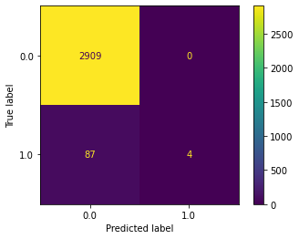

SGD Classifier
Contents
SGD Classifier#
We use a classification model to predict which customers will default on their credit card debt. Our estimator implements regularized linear models with stochastic gradient descent (SGD) learning.
Data#
To learn more about the data and all of the data preparation steps, take a look at this page. Here, we simply import a Python script which includes all of the necessary steps.
from data_prep_credit import *
Model#
from sklearn.linear_model import SGDClassifier
from sklearn.preprocessing import StandardScaler
from sklearn.pipeline import make_pipeline
# We always scale the input. The most convenient way is to use a pipeline.
clf = make_pipeline(StandardScaler(),
SGDClassifier(loss="hinge",
alpha=0.01,
max_iter=200,
fit_intercept=True,
tol=1e-3))
clf.fit(X_train, y_train)
y_pred = clf.fit(X_train, y_train).predict(X_test)
from sklearn.metrics import confusion_matrix, ConfusionMatrixDisplay
import matplotlib.pyplot as plt
cm = confusion_matrix(y_test, y_pred)
disp = ConfusionMatrixDisplay(confusion_matrix=cm,
display_labels=clf.classes_)
disp.plot()
plt.show()

from sklearn.metrics import classification_report
print(classification_report(y_test, y_pred, target_names=['No', 'Yes']))
precision recall f1-score support
No 0.97 1.00 0.99 2909
Yes 1.00 0.04 0.08 91
accuracy 0.97 3000
macro avg 0.99 0.52 0.53 3000
weighted avg 0.97 0.97 0.96 3000